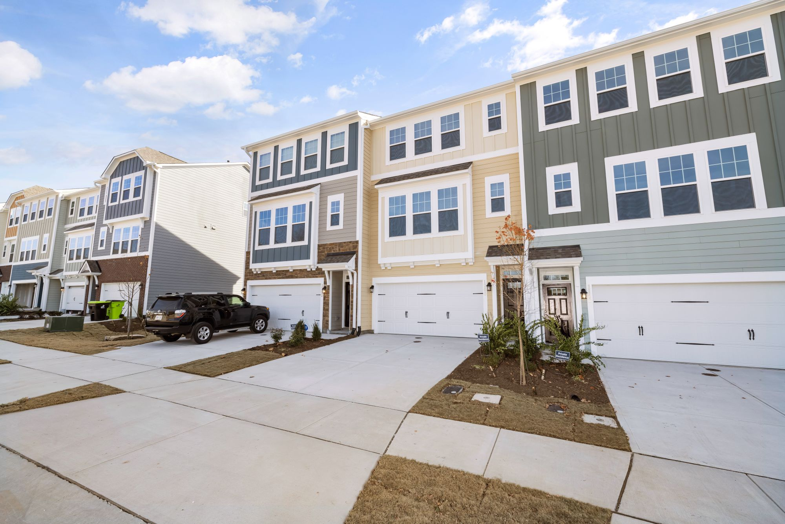
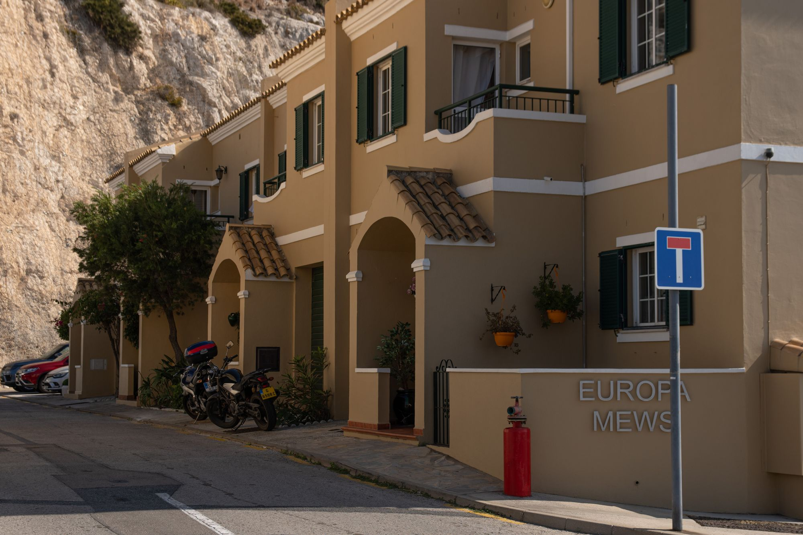
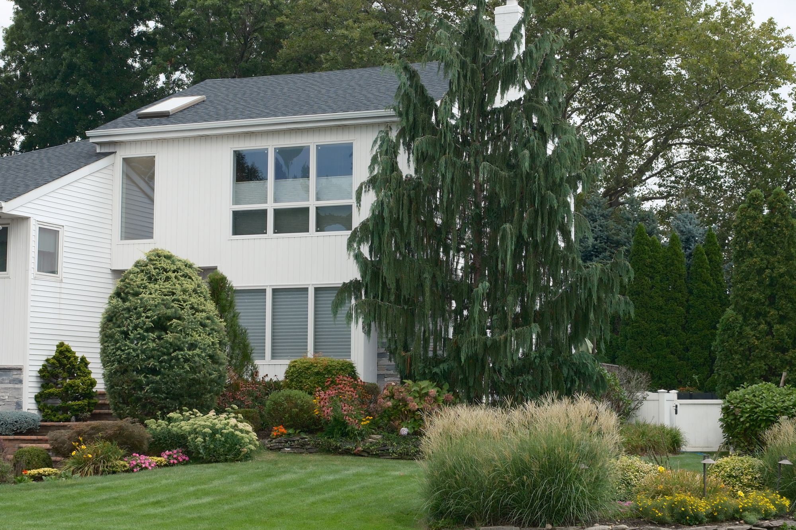
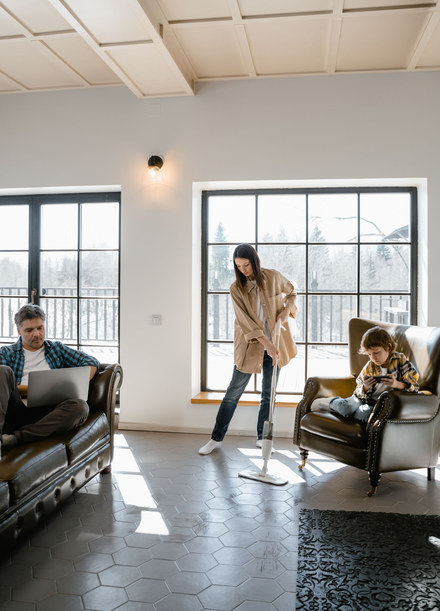
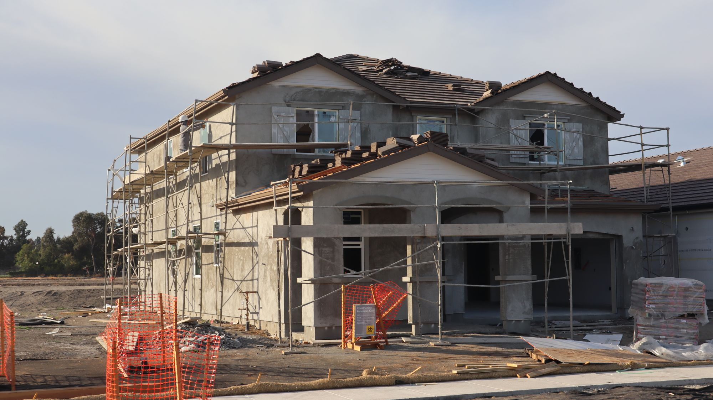
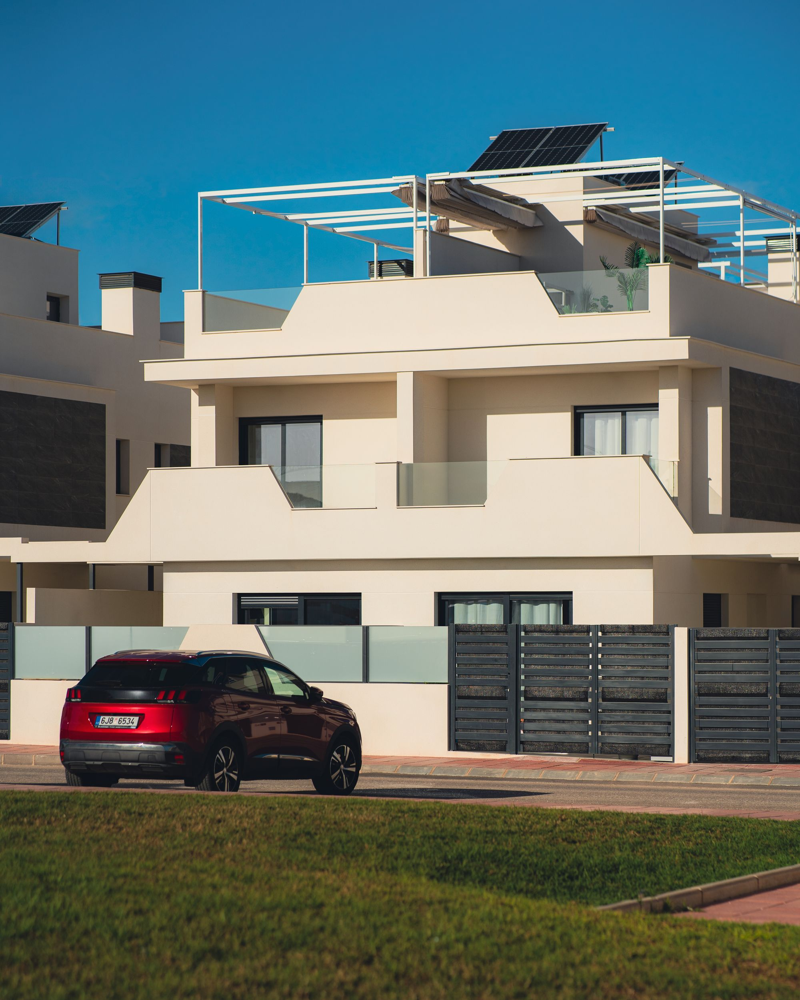
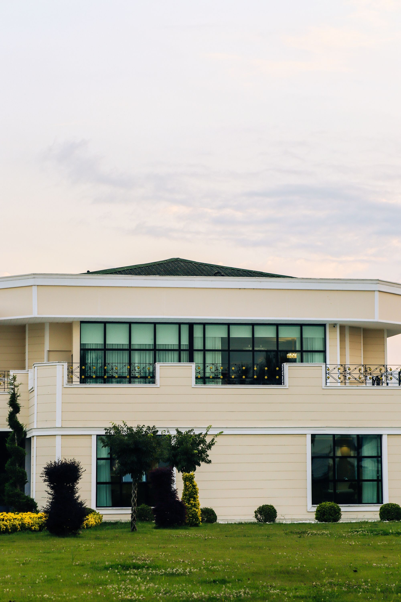
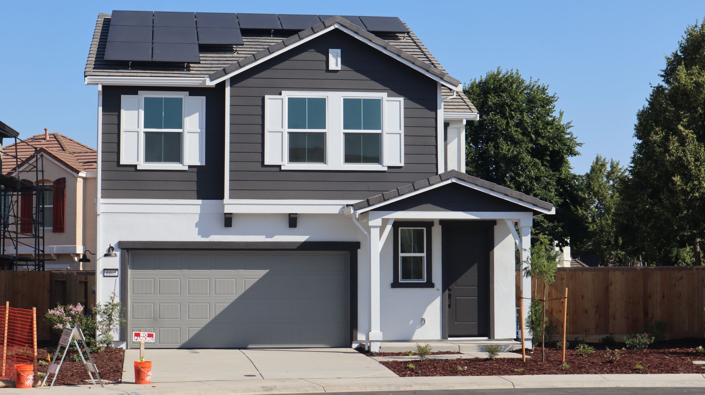
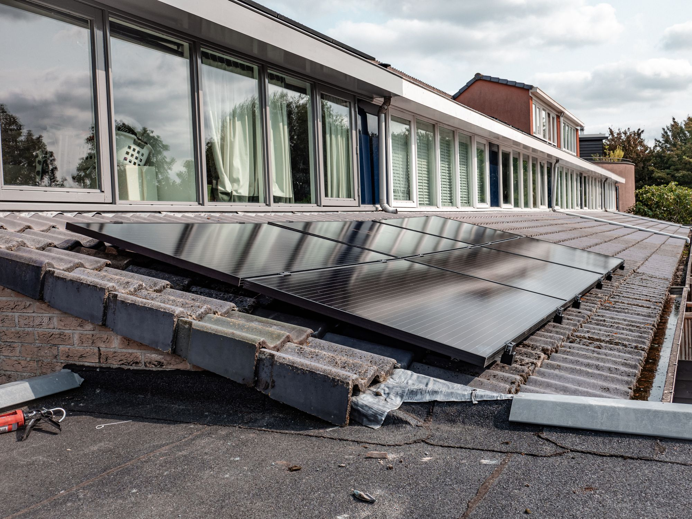
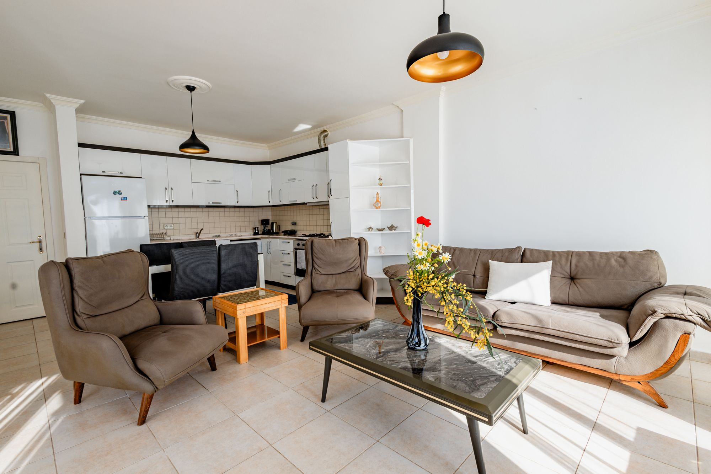

Жилой проект,
адаптированный
к территории.
ALADIN RESIDENCE — концепция жилого девелоперского проекта, который объединяет землю, жилой продукт, инфраструктуру, экономику и управление в единую модель.

территория.
Потом дом.
Не один дом.
Система проекта.
ALADIN не фиксирует один тип здания для всей Украины. Базовая идея — современное семейное малоэтажное жильё, которое меняет формат в зависимости от территории, спроса, инфраструктуры и экономики.

Украина —
не один рынок.
Одна методология, разные региональные модели. Площадка проходит отдельную проверку по спросу, инфраструктуре, безопасности, земле и экономике.

Жильё начинается
с человека.
Продукт формируется вокруг реального покупателя и его возможностей, а не вокруг заранее выбранной площади.

Территория → рынок →
продукт → реализация.
Каждый этап должен подтвердить следующий. Если площадка не выдерживает проверку, проект меняется или от неё отказываются.

Считать до
строительства.
Для каждого ALADIN формируется отдельная модель. Никаких заранее обещанных процентов доходности: результат зависит от территории, продукта, капитала, цены и скорости реализации.

Проектный контур
Что проверяем
Не один прогноз.
Диапазон решений.
Сценарный подход показывает, как проект реагирует на изменение спроса, стоимости строительства, цены продажи и сроков.

Единая методология.
Разные территории.
Запад, центр, Киевская агломерация, отдельные территории восстановления и другие регионы могут иметь разные модели спроса и риска. Поэтому ALADIN сначала проверяет территорию, а уже затем определяет продукт.
Отказ от неподходящей площадки — тоже результат девелопмента.
Риск должен быть
виден до капитала.
Современный украинский жилой проект нельзя строить на предположении, что рынок обязательно будет расти. Критические риски проходят отдельную проверку.

MMW собирает
проект в систему.
MMW-COMPANY может выступать developer, organizer, project manager, operator и коммерческим архитектором проекта.

От одного проекта
к системе.
ALADIN может масштабироваться как семейство регионально адаптируемых жилых моделей — только там, где рынок и экономика подтверждают такую возможность.

Есть территория?
Проверим, что из неё можно создать.
Есть земля, капитал, существующий объект, идея жилого проекта или территория, которая меняется? MMW может начать с исходных данных и проверить территорию, рынок, продукт, экономику и путь реализации.
itimchenko00@gmail.com ↗